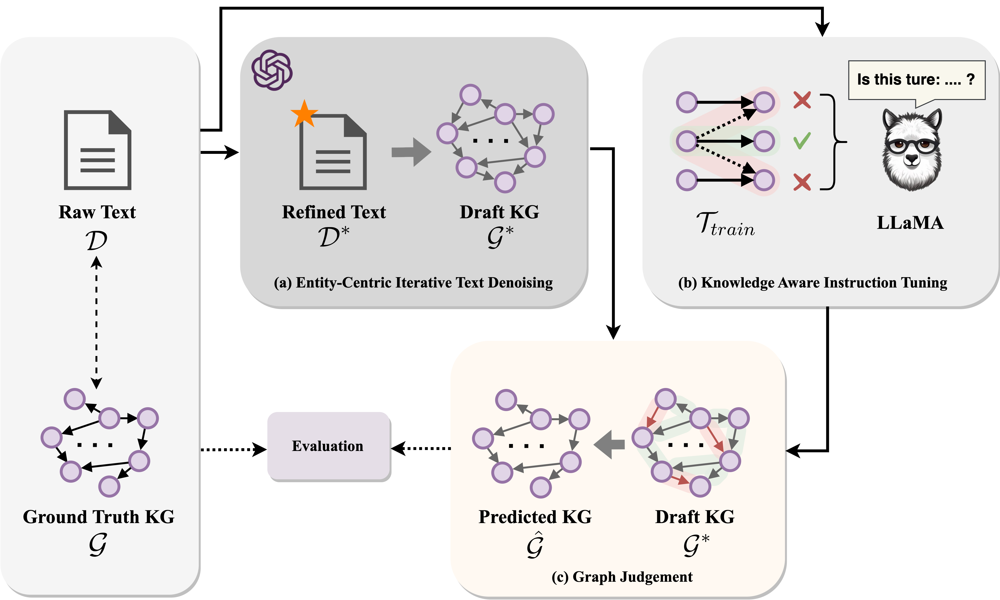
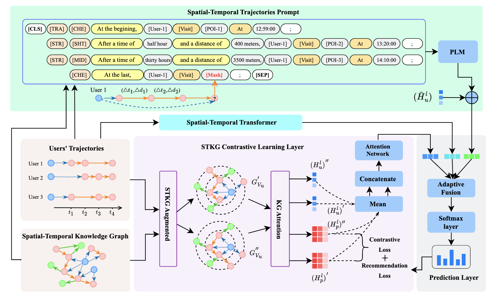
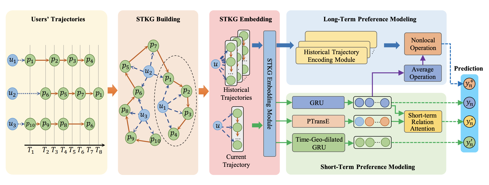

HUANG, Haoyu (黄浩禹)
Master, |
About me
Hi! I am a first-year master student of The Chinese University of Hong Kong, and work as a Research Assistant now supervised by Prof. James Cheng. I also work as a Research Intern in the Center of Machine Learning Research at Peking University, supervised by Prof. Wentao Zhang. Before that, I worked at Century Games AI Group as an AI Engineer Intern in Beijing, mentored by Yuanlei Niu. And I also worked as a Research Intern in the INSIS lab at Beijing Jiaotong University, supervised by Prof. Huaiyu Wan. Previously, I got my B.S. degree in School of Computer and Information Technology from Beijing Jiaotong University (BJTU).News [2025-02]: 🎉🎉 One paper is accepted by IEEE TKDE 2025!
News [2024-11]: 🎉🎉 We won Huawei Spark Award!
News [2024-09]: 🎉🎉 Winner of Entrance Scholarship 2024-25 of CUHK-CSE!
News [2024-05]: 🎉🎉 Admitted by MSCogSci of University of Edinburgh(QS#27)!
News [2023-12]: 🎉🎉 Joined CMLR as Research Intern, full-time for research!
News [2023-10]: 🎉🎉 Admitted by MSCS of CUHK(QS#36)!
News [2023-07]: 🎉🎉 Joined Century Games as AI Engineer Intern!
Research
My research interests include:
Data Mining
Large Language Models
Knowledge Graph
Recommendation System
Publications
|  | Haoyu Huang, Chong Chen, Conghui He, Yang Li, Jiawei Jiang, Wentao Zhang# In submission We seek to utilize the capacity of LLMs to function as a graph judger, a capability superior to their role only as a predictor for KG construction problems. We utilize a fine-tuned open-source LLM to judge the triples generated by another closed-source LLM. |
|  | Wei Chen*, Haoyu Huang*, Tianyi Wang, Zhiyu Zhang, Shengnan Guo, Youfang Lin, Huaiyu Wan# [IEEE TKDE 2025] Converts the structured sequence data into unstructured trajectory text, allowing the advantages of PLM in semantic modeling can be used to capture user movement trajectories; Proposed STKG contrastive learning method that effectively tackles the issue of knowledge noise in trajectories |
|  | Wei Chen, Huaiyu Wan#, Shengnan Guo, Haoyu Huang, Shaojie Zheng, Jiamu Li, Shuohao Lin, Youfang Lin [KBS 2022] Propose STKG for the first time without relying on any external attributes of users and POIs in the field of the next POI recommendation; A novel spatial–temporal transfer relation in STKG is designed to explicitly express movement behaviors among POIs of users. |
Note: * indicates equal contribution, # indicates the corresponding author.
Academic service
Reviewer
ARR Feb 2025
Education
B.E., Computer Science, Beijing Jiaotong University, 09.2019-06.2023.
M.Sc., Computer Science, Department of Computer Science and Engineering, The Chinese University of Hong Kong, 09.2024-Present.
-->Awards
Huawei Spark Award, 2024
CUHK Entrance Scholarship, 2024
Work experience
Research Assistant, Husky Data Lab @ The Chinese University of Hong Kong , Hong Kong SAR, China, 09.2024-Now
Research Intern, CMLR @ Peking University , Beijing, China, 04.2024-Now
AI Engineer Intern, AI @ Century Games , Beijing, China, 07.2023-12.2023
Research Intern, INSIS @ Beijing Jiaotong University , Beijing, China, 04.2022-12.2023